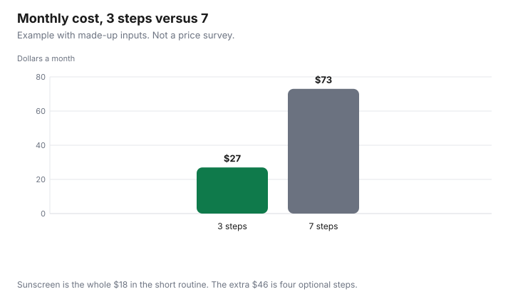

Personal Care · Canada
A Drugstore Skincare Routine in Canada That Covers the Basics for Less
A budget drugstore skincare routine in Canada needs three steps: cleanse, moisturise and sunscreen. Further steps are optional spending, and in Canada sunscreen is regulated as a drug or natural health product. A long routine is a stack of bottles. The bill is the bottles you finish in a month, not the bottles a video named. This page keeps three steps, says when a further step is optional, and prices a month with made-up inputs. It does not rank moisturisers, serums, or stores. Sunscreen is a drug or a natural health product in Canada, not a cosmetic with a pretty label, and that label is the sunscreen guide. Offer types are disclosed. This is not medical advice.
Disclosure: Amazon.ca storefronts and discounted retailer gift cards are offer types. Saving Optimizer may earn a commission if a partner link is added later. No partnership is claimed with Amazon, a drugstore, or a brand. Education only. This page does not name a best cleanser, moisturiser, serum, or sunscreen.
Key takeaways
- The three essentials here are cleanse, moisturise, and sunscreen. Further steps are optional spending.
- Compare the ingredient name on the label. The Cosmetic Ingredient Hotlist, checked 29 Sep 2026, does not become a safety clearance when an ingredient is missing from it.
- A drugstore bottle and a luxury bottle are not ranked.
- The month in the chart is an example with made-up inputs: $27 for three steps and $73 for seven.
- A new, changing, painful, or bleeding patch of skin is a reason to see a doctor, not a reason to add a step.
The three essentials: cleanse, moisturise, sunscreen
Cleanse is the wash. Moisturise is the layer that keeps skin comfortable for you.
Sunscreen is the daytime protection step, on days you are in the sun. Health Canada’s cosmetics safety page, checked 29 Sep 2026, describes a cosmetic as any substance used to clean, improve, or change the complexion, skin, hair, teeth, or nails, and it gives soap, moisturising creams, and shampoo as examples. Sunscreen is not in that cosmetic definition on the sunscreens page. It is regulated as a non-prescription drug or a natural health product. A moisturiser without an SPF is not the sunscreen step.
Three bottles you finish are a routine. Ten bottles you open twice are a drawer. The price that matters is the cost per month of what you use up, which is the bottle price divided by the months it lasts in your bathroom. A gift set does not change that division. Store brands are allowed in the three steps when you can read the same kind of ingredient you wanted. The household store-brand guide is the unit-price habit for paper and cleaner. It is not a skincare test.
Active ingredients and what the label shows
The label shows the ingredient names the brand printed. Line up the name you came for, such as a moisturising ingredient you already tolerate, and ignore a marketing word that is not in the ingredient list. Two products are not equivalent because both say “hydrating.” They are closer when the ingredient you care about is on both lists and you are using them for the same step.
The Cosmetic Ingredient Hotlist, checked 29 Sep 2026 from Health Canada’s consumer product safety pages, is an administrative list of ingredients that are prohibited or restricted in cosmetics. The hotlist page says that if an ingredient does not appear, that does not necessarily mean it is safe. Use the list as a check for a name you want to avoid, not as a certificate for a name that is absent. A drug ingredient, including many sunscreen filters, is a different regime. The store-brand medicine guide is how a DIN works. The generic drug guide is prescription interchange. Neither one swaps a face cream.
Retinol and similar names can appear on cosmetic labels. This guide does not cite a hotlist concentration limit for retinol, so it does not state one. If the label tells you how to introduce the product, follow the label. A prescription retinoid is a drug decision for a prescriber, not a cheaper cosmetic this page can pick.
Where extra steps are optional
A toner, a serum, an eye cream, and a mask are optional in this routine. They are worth the money when they do a job the three essentials do not do, and you will finish the bottle.
They are not worth it when they repeat the moisturiser or when you bought them because a routine online had more steps. This guide does not cite a study that says a seven-step routine works better than three. It will not pretend one exists.
Points do not make an optional step essential. If you collect PC Optimum at a drugstore, the PC Optimum guide is the redemption rule. Subtract points you will redeem from a bottle you were going to buy. Do not add a serum so the points look busy.
| Step | When it might earn a place | When to leave it |
|---|---|---|
| Toner | You will use it daily and it replaces something you already buy | It only repeats the cleanser |
| Serum | One ingredient you came for, and you finish the bottle | You bought it to lengthen the routine |
| Eye cream | You prefer it to using the moisturiser there | It is the moisturiser in a smaller jar at a higher price per ml |
| Mask | You use it on the schedule you set, not once | It sits unopened after a single week |
Store-brand and drugstore equivalents by ingredient
An equivalent, on this page, means the same step and a label you can read, not a certified match. A store-brand cleanser can sit next to a name-brand cleanser when both are cleansers you tolerate.
It is not equivalent because the banner says “gentle.” Write the ingredient you are matching, the size, and the months the bottle lasts. Then divide. A discounted gift card changes the month only after you spread the discount across what you will buy with the card.
Do not build the routine from a US “dermatologist recommended” badge. The Canadian label is the one in your hand. If a condition needs a drug, that is a pharmacist or a prescriber, and the medicine guides above are the price tools for drugs.
Cost per month worked example
This is an example with made-up inputs. A cleanser at $9 that lasts three months is $3 a month.
A moisturiser at $12 that lasts two months is $6 a month. A sunscreen at $18 that you replace every month is $18. The three-step month is $27. Adding a toner at $8 over two months ($4), a serum at $24 a month, an eye cream at $16 over two months ($8), and a mask at $10 a month adds $46. The seven-step month is $73. None of those prices was on a shelf on 29 Sep 2026.
The sunscreen line dominates the short routine in the example because it is replaced every month. If your bottle lasts two months, the month falls. The price-per-ml arithmetic, and Health Canada’s amount to apply, are on the sunscreen guide. Do not use this table as a reason to apply less sunscreen than the label and that guide describe.
| Step | Purpose in this routine | What to look for on the label | Store brand | Example month |
|---|---|---|---|---|
| Cleanse | Wash | A cleanser ingredient list you tolerate | Yes, if the list matches the job | $9 over 3 months = $3 |
| Moisturise | Comfort | The moisturising names you already accept | Yes, on the same test | $12 over 2 months = $6 |
| Sunscreen | Daytime sun step | DIN or NPN, SPF, broad spectrum, on the sunscreen guide | Only if those label items are present | $18 over 1 month = $18 |
| Three-step total | $27 | |||
| Four optional steps | Only if you finish them | One job each, not a duplicate moisturiser | Same label test | $4 + $24 + $8 + $10 = $46 |
| Seven-step total | $73 | |||
| Your month |
When should you see a doctor or dermatologist?
See a doctor when the skin is doing something new: a spot that changes, a rash that spreads, pain, bleeding, or anything that does not behave like the dryness you already manage. A pharmacist can help you read a medicine label and can tell you when the question is beyond a cosmetic.
This page cannot. Do not add steps while you wait if a clinician has told you to come in. Do not treat a hotlist search as a diagnosis.
Children, pregnancy, and a medicine you already take are reasons to ask before you add an active cosmetic. The ask is the pharmacist or the prescriber. The price table is not the ask.

Sources & date stamps
- Health Canada, “Use cosmetics safely,” checked 29 Sep 2026. Page details on that copy were dated 2019-02-28. Definition of a cosmetic, and the instruction to patch-test when the product says to.
- Health Canada, Cosmetic Ingredient Hotlist, consumer product safety page, checked 29 Sep 2026. Prohibited and restricted cosmetic ingredients. Absence from the list is not proof of safety.
- Health Canada’s sunscreens page is cited on the sunscreen guide for SPF and the DIN or NPN. It was not re-copied into the prices in this table.
- Monthly bottle prices are an example with made-up inputs.
Frequently asked questions
What are the essential skincare steps?
Cleanse, moisturise, and use sunscreen during the day. Health Canada’s cosmetics safety page describes a cosmetic as a substance used to clean, improve, or change the complexion, skin, hair, teeth, or nails. Sunscreen is regulated separately, as a drug or a natural health product, which the sunscreen guide covers. A longer routine is optional spending, not a requirement this page found in a rule.
Do drugstore products work as well as luxury ones?
This page does not say they do. Two bottles are comparable here only when you are looking at the same kind of step and you can read the ingredient names on both labels. A higher price is not evidence, and a lower price is not evidence either.
Is sunscreen part of a daily routine?
Yes, as the third essential in this routine, on days you are in the sun. Health Canada’s sunscreens page says to use a broad-spectrum sunscreen with an SPF of 30 or higher. How to read a DIN or NPN, and how 35 ml changes the price of a bottle, is the sunscreen guide. A moisturiser that does not show an SPF is not doing that job.
How do I compare ingredient lists?
Read the ingredient names printed on the two packages and line up the one you came for, such as a sunscreen filter or a moisturising ingredient you already tolerate. The Cosmetic Ingredient Hotlist, checked 29 Sep 2026, is Health Canada’s list of ingredients that are restricted or prohibited in a cosmetic. If a name is absent from that list, the same page says that does not by itself mean the ingredient is safe. This is not a medical comparison.
When should I see a doctor about my skin?
When something is new, changing, painful, bleeding, or not behaving like the dryness or oil you already know, see a doctor or a dermatologist rather than finishing a cheaper routine first. This page cannot tell those apart, and a price comparison is not a diagnosis. A pharmacist can help you read a medicine label, and a doctor is the person for a condition.
Researched and drafted with AI assistance and fact-checked against official Canadian sources. How we create content.